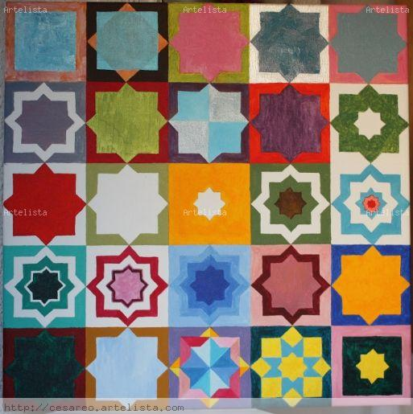

El contenido
El contenido. Radius 25px
El contenido. Radius 50px
El contenido. Radius 10px
El contenido. Radius 90px
El contenido. Outline
El contenido. Outline con offset
El contenido. border image strech- por defecto
El contenido. border image repeat
El contenido. border image round
El contenido. border image space

El contenido. border image slice 33%. Sin round. Estira lo sobrante
El contenido. border image slice 50% con round (repite las sobras)
El contenido. border image slice 20%
El contenido. border image slice 70%
El contenido. border outset 10px
El contenido
El contenido. border outset numero (multiplica por anchura del borde)